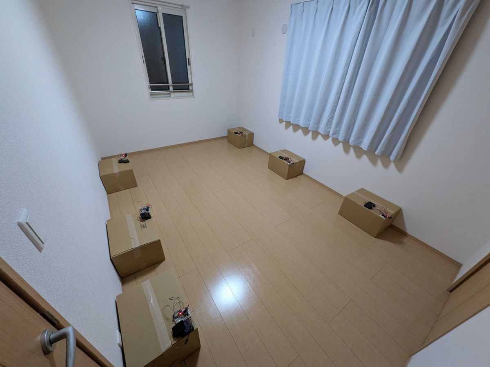
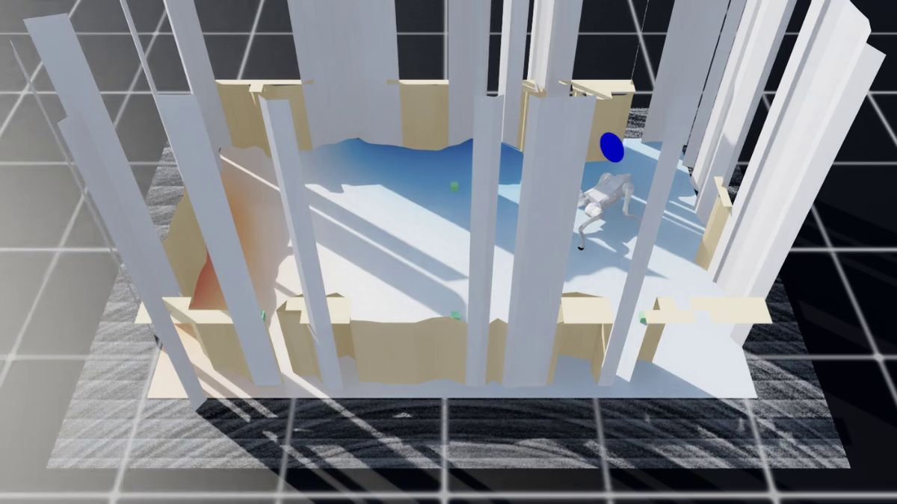

Physical-Edge Native Architecture (PENA)
Making a physical space computable by the many small devices already in it.
Sensors and microcontrollers are spreading through buildings, machines and robots. PENA studies how such devices — cheap, heterogeneous, owned by different parties — can cooperate only with their neighbours to sense, simulate and predict the physics of the space they share, while large central models keep doing what they are good at: global reasoning.

A real 4.0 m × 2.6 m room with six devices, each with a distance sensor on a pan servo (hardware run, 2026-11-21).

The room shape the six devices computed together, each device computing its own region. The floor colour is a dummy temperature field, not a measurement.
1 · The ideaSplit the physics of a space among the devices in it
The space is divided into regions. The device placed in a region senses it and computes its physics; neighbouring devices exchange only the values on their shared border, once per step. Together they form one simulation of the whole space — a digital twin that lives on the devices, not on a server.
2 · WhyThe hypotheses behind it
The architecture is a proposal for a future in which the following hold. They are stated openly so that each can be questioned.
Assumptions about the world
- Devices of different owners share a space. The heating maker's sensors, the lighting system and the occupants' own gadgets sit in the same room. No single party can collect everyone's raw data — so the architecture does not assume that all data goes to one centre.
- Small computers become cheap enough to be placed throughout a space, on batteries or harvested energy.
- Many fields of interest are governed by coupling between neighbouring points (heat, air quality, slow airflow, waves).
- Sending data over radio tends to cost more than computing locally.
- Global reasoning stays with large central models. The centre does not disappear.
What we expect to follow
Devices will split the physics of their space among themselves, each computing its own region and communicating only with its neighbours.
What that requires
When classical numerical solvers and small learned models from different makers are coupled across devices, and devices join or leave while running, the coupled computation must stay stable (not diverge) and its error must stay within a known bound.
3 · DefinitionWhat “computable” means here
The computation is shaped like the space it describes. Four properties follow from the principles in the next section.
1Shaped like the space
The space is split into regions, each with its own small solver (classical or learned). Regions exchange only the values at their shared borders.
2Runs anywhere
The same regional solver runs on a small device placed inside its region or on a PC, with identical results.
3Verifiable
A solution split over many regions matches the single-solver solution bit for bit, and stability conditions at the borders can be checked when solvers of different kinds are mixed.
4Reconfigurable while running
Regions can join, leave or change size without stopping the computation.
4 · PrinciplesHow the architecture is built
1Computation is placed where the physics is
The device that measures a region computes that region, and devices communicate only with their neighbours.
2Components meet only through contracts at their borders
Components that differ in maker, owner and kind — classical solvers, learned models, and in future physical or quantum devices — connect only through what is agreed at their shared borders: what is exchanged, the stability condition, the error bound, and how it is checked. Components are isolated: one hosted on another owner's device reaches nothing beyond its contract (in Dyne, solvers run as WebAssembly, which cannot touch memory outside its own or call anything it has not been granted).
3Keeping those contracts is checkable
Where components are digital and deterministic, the check is bit-for-bit equality; where they are not, it is an error bound.
4The centre does not disappear
Raw sensor data never goes to the centre. Normally a summary of the state does; when a forecast faster than real time is needed, the state the devices have already fitted to their measurements is handed over with identical bits, so that a central computer can join temporarily, compute ahead with the same solvers, and leave again.
5 · LimitsLimits we state up front
A speed limit set by the network
With neighbour-only exchange, information crosses one region per exchange. To follow a field in real time, region size ÷ exchange delay must exceed the speed at which the physics propagates — a CFL-like condition on the network. With today's radio delays this rules out real-time tracking of fast phenomena such as sound, and leaves slow fields (indoor heat, CO2, humidity). Slow fields can often be computed by a single device; the value of many devices lies in sensing spread through the field, not in raw compute.
Bit-exact under message loss, at the cost of delay
Results stay identical to the single-solver solution because devices wait for missing messages; loss therefore turns into delay. On hardware, dropping 30 % of received messages on purpose kept the result bit-exact and roughly doubled the run time.
Honest devices only, for now
Current guarantees assume that every device is honest and only faults occur (message loss, delay, devices leaving). Trust between devices of different owners — authentication, rejecting implausible border values, tolerance of malicious devices — is future work.
No claim of superiority
No claim is made over centralised or GPU-based setups. This is groundwork for a time when edge computing is woven into physical spaces.
6 · Where we areResearch prototype, first room-scale hardware run
Status as of 2026-11-21. Each item is marked by where it has been shown: hardware on ESP32 devices, simulator in the deterministic simulator (anyone can rerun it without hardware), or next for work in progress.
| What | Result | Shown on |
|---|---|---|
| 2D wave equation split over 4, 8 and 16 devices | Every device's part matches the single-solver solution bit for bit (81 × 81 grid, 400 steps), also with 30 % of messages dropped | hardware |
| Room shape computed by six devices with pan-servo distance sensors | Walls within 49 mm on average (no calibration yet; 7.7 mm in the simulator with the same placement); 83 % of visible surfaces recovered | hardware |
| A device leaving and rejoining | Neighbours detect the silence within about 10 s and hold; after power returns the device reconnects in about 40 s but does not yet rejoin the computation (dyne#131) | hardware |
| Seven accelerometer/gyroscope modules on one board, recorded and analysed on a PC | Averaging cuts gyroscope noise as expected for independent sensors (√7 ≈ 2.65); horizontal accelerometer axes too once one replugged module is left out. Fusion on the devices not yet run (report) | hardware |
| Twin → robot simulator | The room computed on the devices is exported as USD; a Unitree Go2 walks in it in Isaac Sim with a pretrained policy | hardware + Isaac Sim |
| Twin → CFD | The same room becomes an OpenFOAM mesh (912 cells) and runs scalarTransportFoam (initial temperatures are dummy values) | hardware + OpenFOAM |
| Device replacement and joining while running; mixing classical and learned solvers | Bit-exact against the single-solver solution under loss, delay, pauses and partitions | simulator |
| Stability guarantees | Proven: heat-equation scheme and sensor nudging never increase the largest numerical error under stated conditions; wave scheme stable for Courant number ≤ 1/√2 on an infinite uniform grid (checked numerically on bounded grids: 0.70765 with fixed-value walls). Derived under idealisation: bounds when classical and learned solvers are mixed. Open: matching the mixed-solver predictions on hardware | theory + simulator |
| Training robots inside the twin of any room; twin that follows furniture moving; forecasts handed to a central computer with identical bits | In progress toward the MITOU final report | next |
Timeline
- 2026-07 Architecture and goals presented in the IPA MITOU IT program.
- 2026-08 Two ESP32 devices over Wi-Fi match the single-device solution bit for bit; 16 devices in the deterministic simulator.
- 2026-09–11 Stability theory for coupled classical and learned solvers; border conditions for unobserved sides; time sync and over-the-air updates for device swarms.
- 2026-11-15 Dyne released as open source (MIT OR Apache-2.0), with CI on Linux, macOS and Windows.
- 2026-11-21 First room-scale hardware run: 16 devices, room twin exported to Isaac Sim and OpenFOAM.
- Next A twin of a home room that follows changes; robot learning inside the twin.
- 2027-05+ Submission of Dyne to the Journal of Open Source Software (JOSS).

The room computed by the six devices, exported as USD: a Unitree Go2 walks in it in Isaac Sim (pretrained locomotion policy, inference only).
7 · RepositoriesSoftware
| Repository | The question it answers | Status |
|---|---|---|
| dyne · docs | Can a physical model be split across many small devices, kept bit-exact with a single computer through loss, delay, joining and leaving, and fed by local sensors? | research prototype, v0.1.0 (DOI 10.5281/zenodo.24241009) |
| erg | On the same cheap four-legged robot without vision, how does control split over the legs (neighbour-only exchange) differ from one central policy? | early: design records (scope, robot and comparison, expected differences), first MJCF model with a 10 s standing test, Dyne submodule with a bit-exact check, CI |
| gauss | The same comparison as a pure question of model architecture, at the size of industrial robots | just started: README only |
| poise | Can a soft robot body be used as part of the computation (physical reservoir computing) for control? | just started: README only |
| barye | (merged into dyne on 2026-11-16) | archived |